Вы можете регулировать ширину и высоту строк таблицы, управлять нумерацией, группировкой и т. д. Чтобы перейти к настройкам, в режиме редактирования формы приложения выберите нужное поле и нажмите Настройка таблицы.
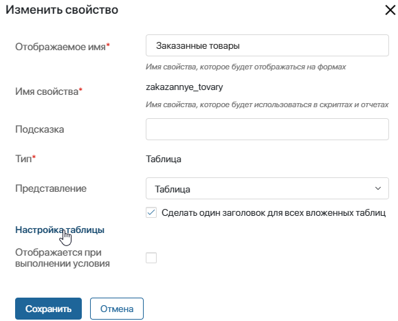
Общие настройки
Общие настройки применяются к таблице в целом. Вы можете регулировать ширину и высоту строк таблицы, управлять нумерацией, группировкой и сортировкой строк в ней, а также скрывать или делать видимыми заголовки и футеры колонок. Рассмотрим эти опции подробнее:
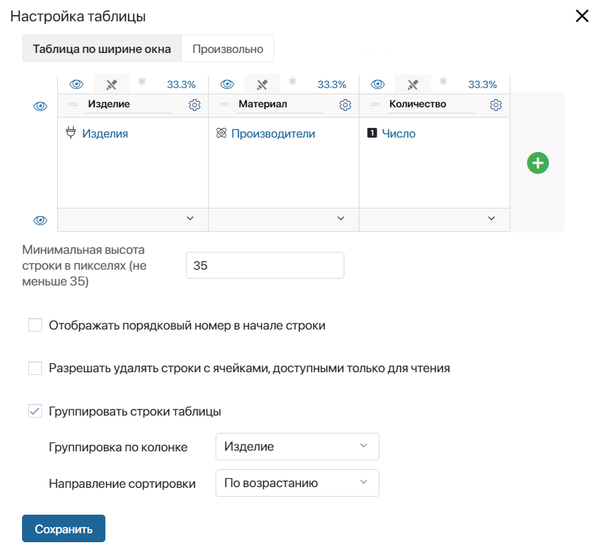
- Таблица по ширине окна или Произвольно — включите опцию Таблица по ширине окна, если нужно отображать таблицу на полную ширину страницы. Размеры колонок задаются в процентах от этой величины. Выберите Произвольно, чтобы задать точные размеры колонок в пикселях. На странице общая ширина таблицы будет равна сумме размеров её колонок;
- Минимальная высота строки в пикселях (не меньше 35) — для выравнивания таблицы задайте высоту её строк. Минимальное значение — 35 пикселей;
- Отображать порядковый номер в начале строки — в таблице появится дополнительная колонка с номером строки, которая заполняется автоматически;
- Разрешать удалять строки с ячейками, доступными только для чтения — включите опцию, чтобы пользователи могли удалять строки таблицы, в которой есть колонки только для чтения. Предположим, в таблице Спецификация заказа есть недоступные для редактирования ячейки. В них передаются данные из приложения Заказы. Остальную информацию менеджер заполняет вручную. При включённой опции менеджер сможет удалять строки в таблице с заказом, например, если внёс неверные данные;
- Группировать строки таблицы — настройка позволяет структурировать данные в таблице и отображать их в удобном для пользователя виде:
- в поле Группировка по колонке укажите колонку, по значениям в которой нужно сгруппировать строки таблицы;
- с помощью опции Направление сортировки группы в таблице можно расположить по убыванию или возрастанию общего значения. Если группировка выполнялась по строковым данным, то сортировка производится по алфавиту.
Обратите внимание, если для колонок таблицы включена опция Сортировка, группировать строки нельзя. В появившемся окне оповещения выберите, какую опцию оставить активной.
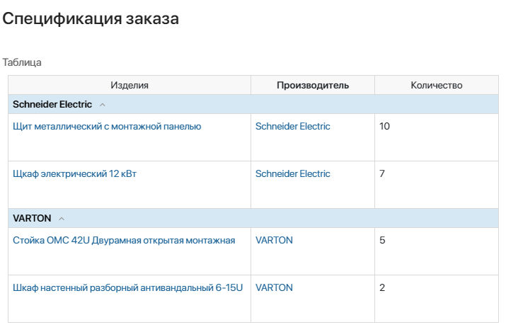
Настройки колонок
Индивидуально для каждой колонки можно настроить:
Ширина
В зависимости от значения опции Таблица по ширине окна/Произвольно размер колонки задаётся в процентах от ширины страницы или в пикселях. Чтобы задать произвольную ширину столбца, потяните за его границу.
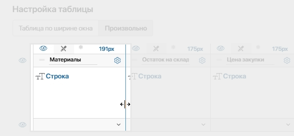
Ширину колонки можно устанавливать автоматически по содержимому. Для этого нажмите на значение ширины в колонке и выберите доступный вариант:
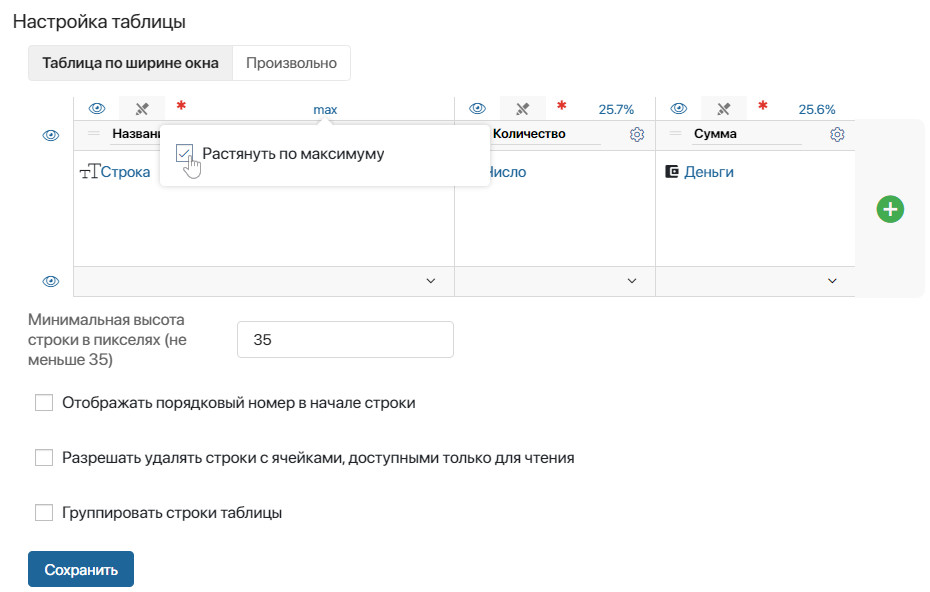
- Растянуть по максимуму — настройка доступна при выборе опции Таблица по ширине окна. Ширина выбранной колонки будет максимально увеличена за счёт сжатия остальных. После выбора опции значение ширины в столбце сменится на max;
- Сжать до минимума — настройка доступна при выборе опции Произвольно. Ширина колонки будет уменьшена до размера самого большого элемента в столбце. После выбора опции значение ширины в столбце сменится на min.
Внешний вид
Вы можете добавить сплошную заливку для колонок, а также изменить расположение, цвет текста, использовать подчёркивания, курсив и полужирный шрифт. Для этого нажмите значок шестерёнки рядом с названием колонки. В открывшемся окне переключайтесь между опциями, чтобы отформатировать текст, как вам нужно.
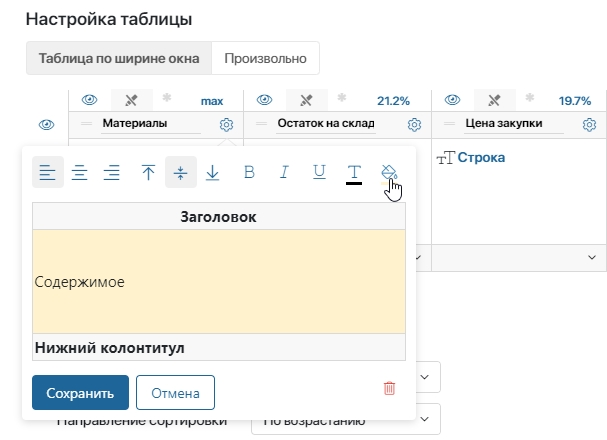
Видимость
Вы можете скрыть заголовки и футеры у всех колонок таблицы. Для этого слева от таблицы нажмите значок . Чтобы сделать видимой ранее скрытую колонку, нажмите значок 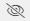.
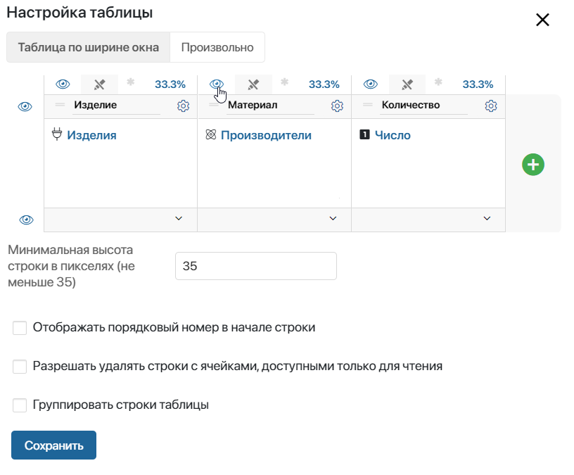
Опции «Только для чтения» и «Обязательно для заполнения»
Чтобы защитить данные в колонке от изменения, включите для неё опцию Только для чтения. Для этого в строке над заголовком колонки нажмите значок . Когда пользователь будет работать с таблицей, он не сможет отредактировать такой столбец.
Важно: по умолчанию пользователи не могут удалять строки таблицы, в которой есть недоступные для редактирования столбцы. Чтобы это изменить, в настройках таблицы включите опцию Разрешать удалять строки с ячейками, доступными только для чтения.
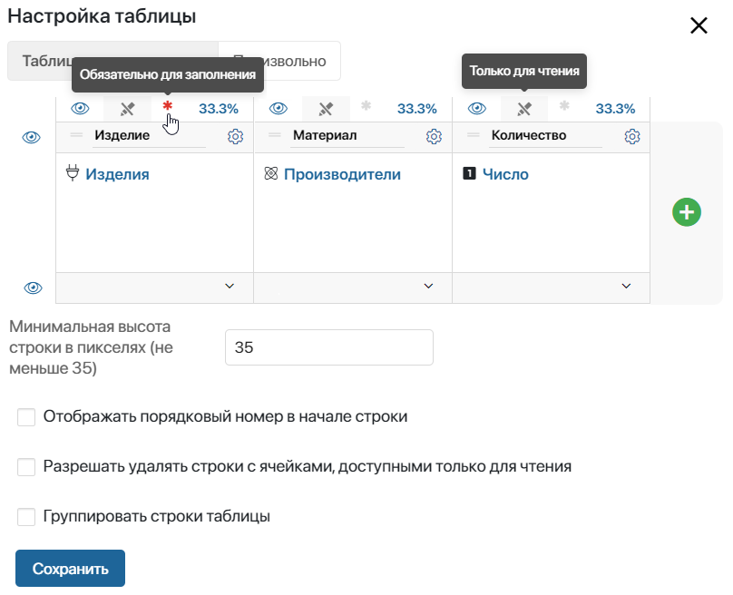
Если колонка не должна остаться пустой, установите для неё флаг Обязательно для заполнения. Нажмите на значок звёздочки в строке над заголовком колонки. Цвет значка сменится на красный. Теперь при работе с таблицей пользователь не сможет сохранить изменения, пока колонка не будет заполнена. Чтобы снять флаг, нажмите на значок звёздочки ещё раз.
Важно: в колонке должны быть заполнены все пустые ячейки.
Сортировка
Вы можете сортировать данные в колонках по возрастанию и убыванию, а также по алфавиту. Сортировка доступна для колонок следующих типов: Число, Дата/Время, Деньги, Строка, Пользователи, Приложение, Телефон, ФИО и E‑mail.
Чтобы включить сортировку в колонке, при её создании или редактировании установите флажок в поле Сортировка.
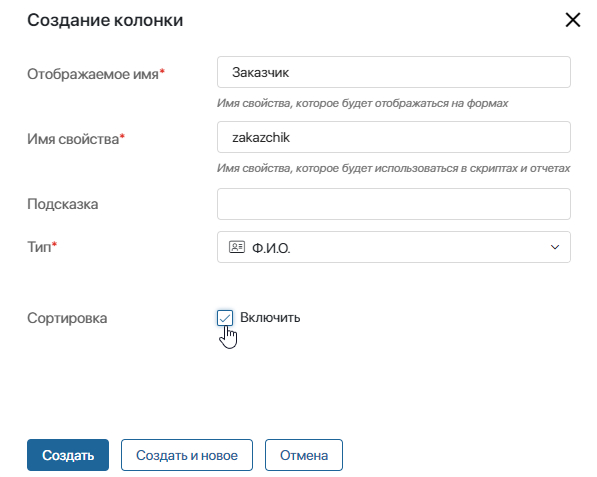
Обратите внимание, при включённой опции Группировать строки таблицы сортировка данных в колонке недоступна. В появившемся окне оповещения выберите, какую опцию оставить активной.
После включения сортировки на форме просмотра нажмите на заголовок колонки, чтобы поля располагались по возрастанию данных. Повторное нажатие отсортирует данные по убыванию. Чтобы сбросить сортировку, нажмите на заголовок поля ещё раз.
Настройка колонок на формах и в контексте
На формах приложений, виджетов и задач бизнес-процессов видимость колонок и флаги Только для чтения и Обязательно для заполнения настраиваются тремя различными способами. Выбор способа зависит от типа элемента, на форме которого размещена таблица.
На форме задачи в бизнес-процессе
Настройка выполняется следующим образом:
- На схеме процесса дважды нажмите на элемент Задача и перейдите на вкладку Форма.
- В столбце Название выберите поле типа Таблица.
- В открывшемся окне перейдите на вкладку Отображение колонок.
- Выделите колонку в списке, чтобы включить или отключить опции:
- — ограничение видимости;
- — обязательность заполнения ячейки;
- — доступность только для чтения и запрет на редактирование.
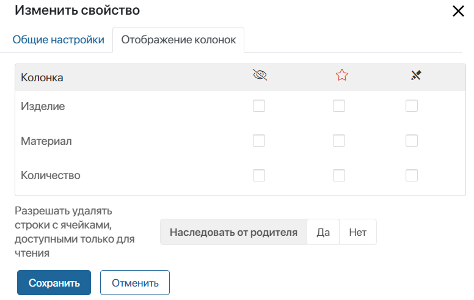
Чтобы пользователи могли удалять строки при заполнении таблицы, в которой есть столбцы, недоступные для редактирования, в окне настроек включите опцию Разрешать удалять строки с ячейками, доступными только для чтения.
- Сохраните настройки.
Важно: настройки колонок действуют только для текущей задачи в бизнес-процессе.
На форме приложения, виджета или страницы
Если свойство типа Таблица размещается на форме приложения, страницы или виджета, настройка колонок выполняется следующим образом:
- Откройте шаблон формы в расширенном режиме.
- На форме выберите или добавьте свойство типа Таблица. Чтобы добавить свойство, перетащите его на форму с правой панели.
- Нажмите на значок шестерёнки в заголовке свойства.
- В открывшемся окне перейдите на вкладку Настройки отображения.
- Выделите колонку в списке, чтобы включить или отключить опции:
- — ограничение видимости;
- — обязательность заполнения ячейки;
- — доступность только для чтения и запрет на редактирование.
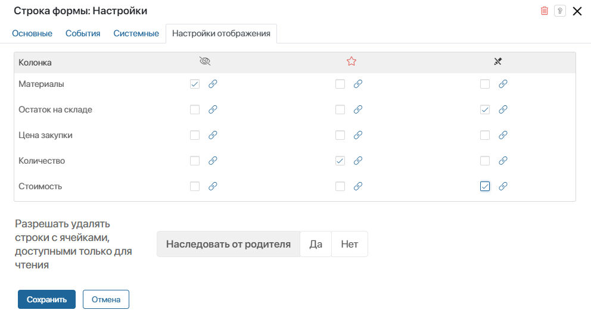
- Сохраните настройки.
Важно: настройки колонок действуют только для формы, в шаблоне которой они были установлены. Например, если вы скрыли колонки только в шаблоне формы создания элемента приложения, они по‑прежнему будут отображаться на форме просмотра.
Вместо флажка вы можете указать контекстную переменную типа Выбор «да/нет». Для этого нажмите значокнапротив названия колонки. Выберите переменную из списка. Ограничения колонки будут включены или выключены, в зависимости от значения связанной переменной.
Пример привязки видимости колонки к переменной
Допустим, вы ведёте учёт материалов в приложении Склад. В контексте приложения есть свойство Материалы на складе типа Таблица, где хранятся сведения о текущих остатках материалов. Информацию нужно отправлять внешним заказчикам, но без отображения закупочной цены. Для этого:
На странице сведений о текущих остатках материалов появится опция Внешний заказчик. Если сотрудник выберет её перед отправкой, закупочные цены для адресата будут скрыты. |
На простой форме приложения
В приложении вы также можете быстро настроить колонки в окне Настройки формы на вкладках Создание, Просмотр и Редактирование без перехода в конструктор форм. Для этого:
- Нажмите на значок шестерёнки справа от названия приложения и выберите в появившемся меню Настройка формы.
- Перейдите на вкладку Создание, Просмотр или Редактирование.
- В колонке Контекст слева выберите и перетащите на поле справа свойство типа Таблица, колонки в котором вы хотите настроить.
- Нажмите на названии свойства в колонке Название на форме.
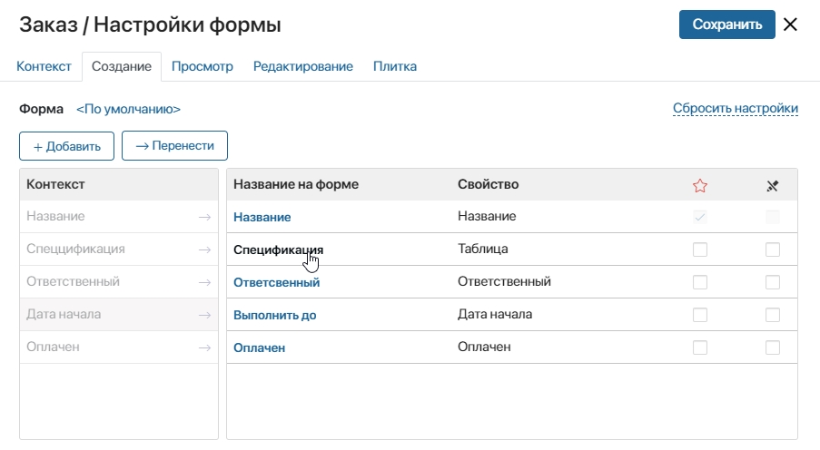
- В открывшемся окне перейдите на вкладку Отображение колонок.
- Выделите колонку в списке, чтобы включить или отключить опции:
- — ограничение видимости;
- — обязательность заполнения ячейки;
- — доступность только для чтения и запрет на редактирование.
- Сохраните настройки.